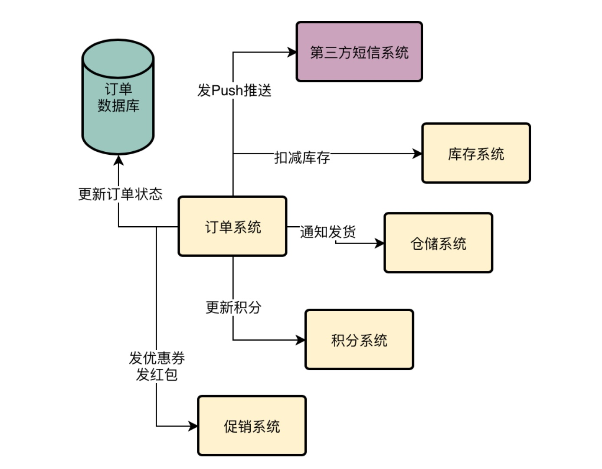
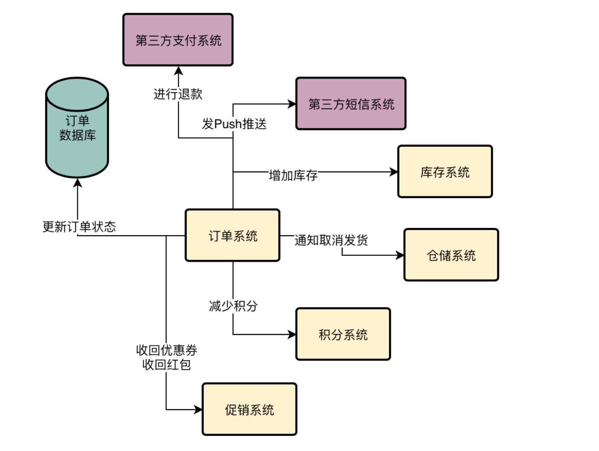
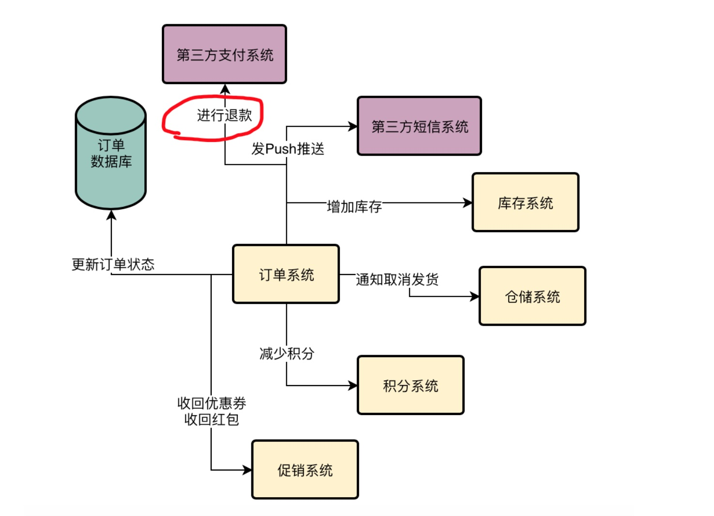
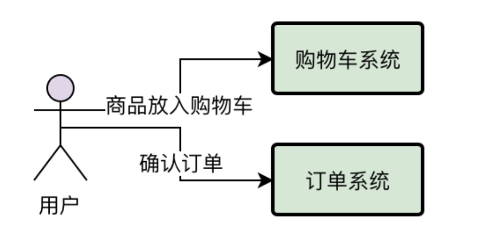
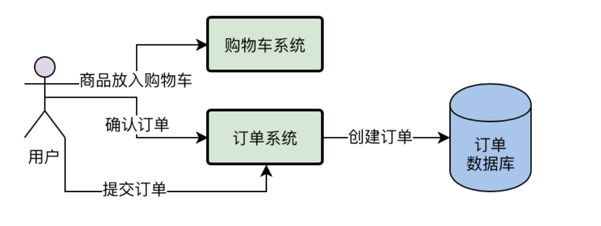
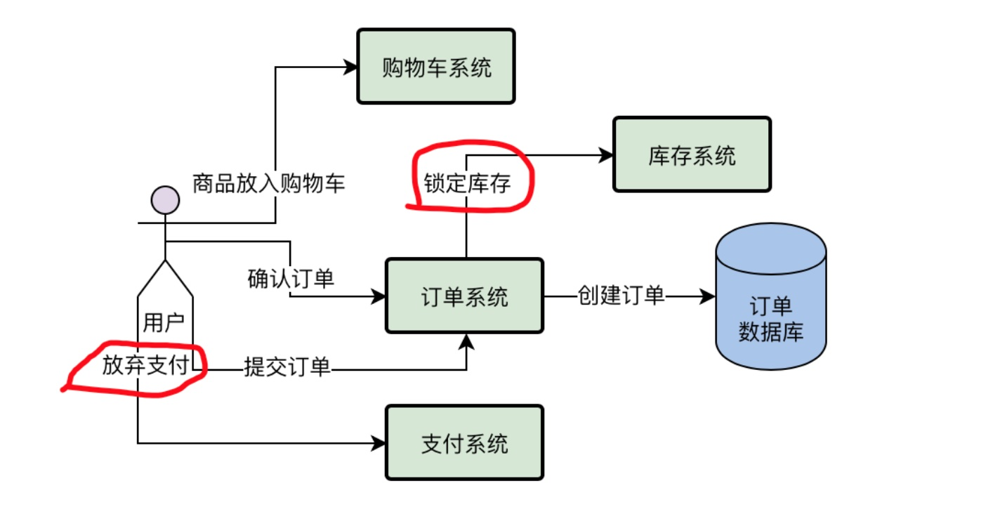
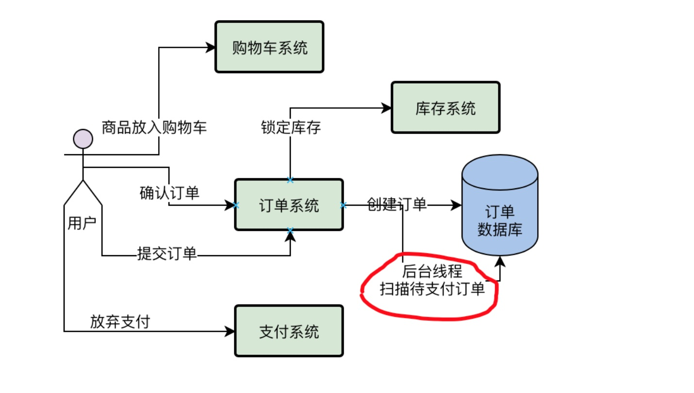

^\s*$\n 正则匹配多行
系统面临的现实问题：
订单退款时经常流程失败，无法完成退款！
1、想解决问题的小猛，大脑却一片空白
昨天明哥给小猛讲了互联网系统的用户使用情况以及负载之间的关系，还有系统负载造成的压力都是指的什么，真是让小猛打开眼界。
小猛以前可从没考虑过，平时部署的系统、使用的数据库居然还有这些问题。
而且昨天明哥也给小猛指出了系统现在面临的第一个问题，就是支付成功之后的核心业务流程里混杂的子步骤太多了：
扣减库存、更新订单状态、更新积分、发优惠券、发红包、发送Push推送、通知仓储系统发货，等等一系列的事情要做。
这一连串的步骤有时候在系统高峰期压力大的时候，可能需要好几秒才能完成，让用户体验非常的不好。
小猛也回去想了很久，这个问题应该怎么解决呢？
暂时也没什么思路，毕竟自己经验还浅，大脑一片空白。算了，还是等着明哥给讲讲吧！
2、再次回顾一个复杂的订单支付流程
今天小猛刚一上班，厕所都来不及上，就被明哥给拽去了小会议室。接着明哥就要给小猛继续分析系统现在存在的一些问题。
小猛心想：必须得好好听啊！问题分析完之后，明哥就要给我派发开发任务了，到时候我做的事情都是用来解决这些技术问题的。
到了会议室，明哥立马就在小白板上唰唰的画出了订单支付过后的一系列流程，就在下面的图里
包含了扣减库存、更新订单状态、更新积分、发优惠券、发红包、发Push推送、通知仓储系统调度发货。

小猛看着上面那个订单支付后的核心流程图，心里感叹道：真是复杂啊！
自己平时上网购物确实知道买东西付钱之后，电商平台上的商品库存会减少，而且还会给自己增加一些积分。积分多到一定程度，会员等级会升级。
而且一般每次都会发放一些优惠券、红包抵用券之类的东西，并且再查看订单的时候，状态已经变更为待发货。
但是真到了自己去思考一个订单系统设计的时候，才发现这个购物真是一个非常复杂的流程。
3、对订单进行退款时需要干些什么？
接着明哥说：之前我们讲过，订单系统的第一个问题，就是支付之后的流程过于复杂，导致耗时太长，用户体验太差，这个是我们后续一定会去优先解决的问题。
那么订购单系统的第二个问题，就是订单支付的反向过程，退款。
小猛这时很奇怪的问：订单退款的时候都要干些什么啊？有什么问题呢？
明哥说：你想想，用户下一个订单，把钱付给平台之后，平台会给用户一系列的利好，比如发券、发积分、发红包。
为什么要给用户这么多好处？还不是因为你付钱给人家了？
小猛说：是的是的，这个世界是现实的，没有平白无故的爱，也没有平白无故的恨。
明哥接着说：那么在你申请退款之后，平台就会把之前你付给他的钱还给你了。
既然钱退给你了，人家根本就没得到你什么好处，这个时候还不得把之前给你的一些利好都收回来？比如优惠券、积分、红包之类的东西。
所以，本质上订单退款应该是一个订单支付的逆向过程，也就是说他应该做如下一些事：
重新给商品增加库存
更新订单状态为“已完成”
减少你的积分
收回你的优惠券和红包
发送Push告诉你退款完成了
通知仓储系统取消发货
最重要的是，需要通过第三方支付系统把钱重新退还给你。
而且如果电商平台都已经给你发货了，你才申请退款，实际上你还得把收到的商品给人家快递回去，等他们收到了商品再把钱退还给你。
当然，这里我们简单起见，就说商品还没发货这种情况吧。
明哥说着，就唰唰的在小白板上又画了一个图，这是退款的流程图。

小猛一看，倒吸了一口凉气，心想，做个电商系统还真不容易啊！买东西退东西原来都这么复杂，有这么多的讲究！
4、小猛的灵光一闪：退款和支付不是有一样的问题吗？
这个时候小猛大脑突然灵光一闪，他说：明哥，那这个退款和支付不是有一样的问题吗？都是流程太长，子步骤过多，如果用户点击退款之后要一下子执行这么多步骤，可能需要好几秒的时间，用户体验同样是很差的！
明哥用满意的眼神看着小猛：真是没看错人，你这脑子就是灵活！没错，实际上这个订单的退款也有同样的一个问题，就是步骤太多太耗时，一起执行的话，就会耗费很长时间，用户体验很不好。
但是，明哥话锋一转：不过订单的退款可不只是这一个问题，你再观察一下，这里还有什么问题？
小猛疑惑的盯着这个流程图10秒的时间，一时语塞，茫然的看着明哥，实在想不出这里还有什么问题。
5、退款的最大问题：第三方支付系统如果退款失败怎么办？
明哥这个时候说，其实在退款的时候，最大的问题还不是步骤太多执行太慢，最大的问题是假设你的库存增加完了，订单状态更新了，积分收回了，优惠券收回了，仓储系统中断发货了，然后Push推送告诉你说已经退款了，结果第三方支付系统退款失败了。
比如有可能是第三方支付系统自己的问题导致退款失败，也可能是你在调用第三方支付系统的时候，因为你自己的网络问题导致调用失败，就退款失败了。
总之，用户以为退款成功了，结果一查自己账户，钱就是没进来，这才是最要命的一个问题。
明哥说着，在下面的图里，画上了一个重重的红圈。

明哥指着上图中的红圈，严肃的说，你有没有想过如果调用第三方支付系统退款的时候万一失败了会怎么样？
小猛入职以后第一次看见明哥这么严肃的表情，有点吓到了，胆怯的问：是会把我拉出去祭天吗？顿时脑子里浮现出一个程序员在祭坛上被祭天的场景。
明哥哈哈大笑：那倒不至于，不过这种情况可能会导致用户再也不愿意来我们这里购物了，而且领导一定会狠批我们，年终奖就不用想了。
要是赶上公司年景不好，要优化几个人出去的时候，弄不好就轮到你了！
总而言之，这个问题，也是我们订单系统要解决的一个很重要的问题。远远比步骤太多耗时太长，用户体验不好这个问题要严肃的多。
6、如果用户下单后一直不付款怎么办？
明哥接着说，现在我们已经看完了用户支付和退款两个流程里的问题了，接着我们来看看第三个问题，就是用户在支付之前会干什么。
通常来说，用户在购物车里会加入很多的商品，然后选择下单跳转到一个订单确认界面，在这里确认收货地址、发票抬头、优惠券使用等一系列的问题，接着正式下这个订单。
明哥说着，在小白板上画出了一个流程图。

接着用户对订单一旦确认完毕，就会提交订单，订单提交到订单系统之后，就会正式在数据库中创建一个订单出来
明哥说着在流程图里加了一点步骤

接着正常来说，就会跳转到支付界面让他进行付款了，但是万一这个人在付款界面犹豫了一下呢？结果自己把付款界面给关了，这不就是订单创建了，但是没支付么？
此时订单的状态“待支付”，而且只要你下了订单，你订单里涉及到的商品，都会有对应的锁定库存的一个工作，相当于给你预先保留好这些商品。
明哥说着在流程图里又加了几个步骤。

明哥指着图里画红圈的地方说，你看订单系统在创建订单的时候已经调用库存系统锁定了你要买的商品的库存，结果明明给你跳转到支付界面了，你却放弃了支付，这不是在耍我们么？
要是订单一直不付款，一直这么放着，他对应的商品库存就会一直锁定，别人都没法买了。
这就好比你去商场买鞋子，看到一双球鞋要1500块，然后结果你就拿个铁盒子来放在商店里，把球鞋放进去锁上，然后告诉营业员说，我下个月发工资过来买这个鞋子，现在我把他锁起来，谁都不许买，给我留着！
难道你让人家球鞋店给你保留鞋子一个月？
听到明哥的这个比喻，小猛不禁哈哈大笑，比喻的很贴切，确实是这个道理。
明哥接着说道：所以一般来说，我们的订单系统会启动一个后台线程，这个后台线程就是专门扫描数据库里那些待付款的订单。
如果发现超过24小时还没付款，就直接把订单状态改成“已关闭”了，释放掉锁定的那些商品库存。
明哥在流程图里又加了一个步骤。

7、如果有几十万订单没付款，难道要一直傻傻的扫描？
明哥接着说，问题就出在了这个扫描待支付订单上了。
假设咱们现在数据库中积压了几十万笔待支付的订单，难道你要求一个后台线程不停的去扫描这几十万笔订单吗？这个效率明显是很低的啊！
万一以后有几百万笔未支付订单呢？难道要不停的扫描几百万笔待支付的订单？
所以这个就是订单支付之前最大的一个技术问题。
小猛听完之后，恍然大悟，现在订单支付之前，支付的时候，支付之后要退款的时候，居然都有各自的问题所在，看来后续要做的优化还真是不少！
今天小猛觉得自己对订单系统的业务和技术问题又理解的更加深刻了，他决定回家继续好好做笔记，务必让自己在一周以内对订单系统彻底熟悉起来！